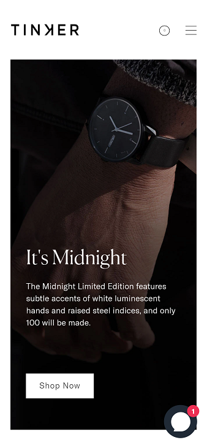
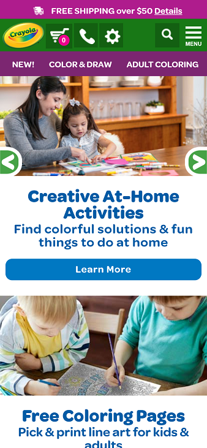
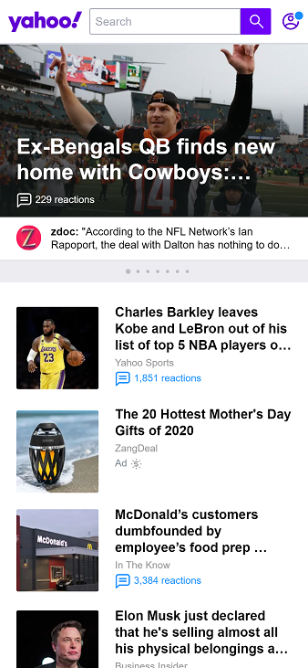

Fitt's Law
Tinker Watches
https://tinkerwatches.com
Tinker Watches is a good example of Fitt's Law. They made the button easy to see, easy to navigate too and a little larger than anything around it, so the attention is drawn to the button. This is definitely an intentional design choice as it is clear that they want you to click on the Shop Now.
Contrast
Crayola
https://www.crayola.com
Crayola's website is a great example of contrast. They use great contrasting colors to make the website pop. They are well known in the industry for making crayons, markers, colored pencils, and more in thousands of colors. So it is no surprise that they are masters of contrast
Alignment
Yahoo
https://www.yahoo.com
Yahoo's website is a great example of alignment. The text in the image is aligned to the left and is nice and clean. When you look at the secondary articles below, the images are all aligned and the article headings are aligned well with each other too. It shows that Yahoo has made the design principle of alignment an important part of their design.